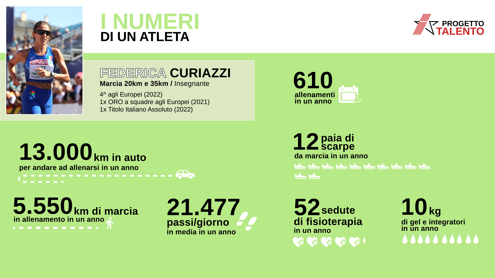
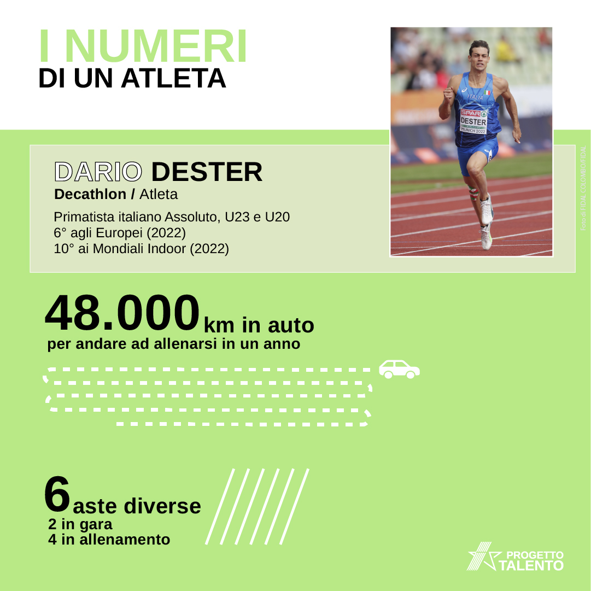
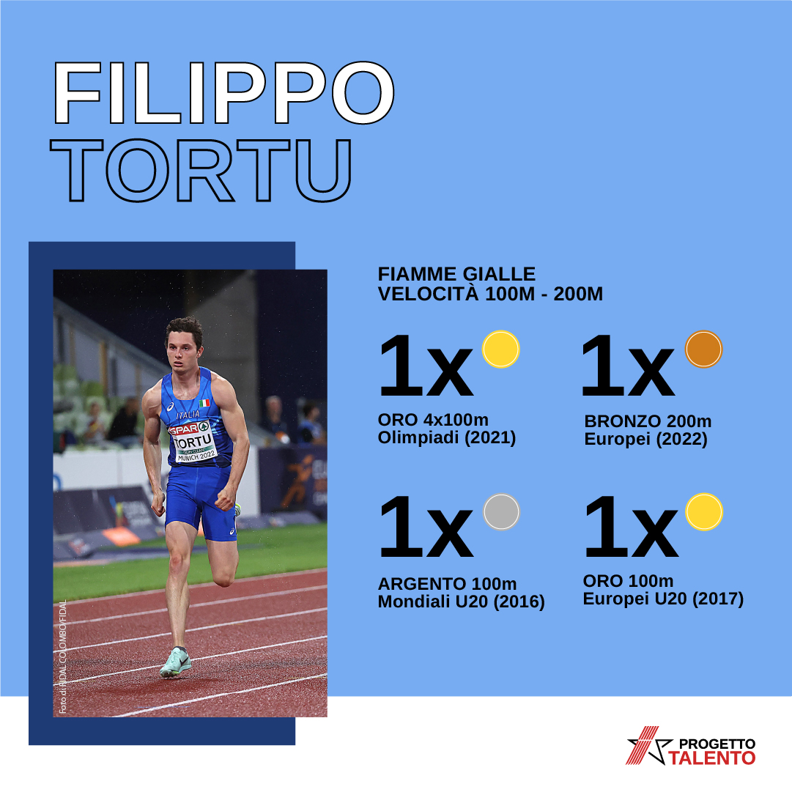
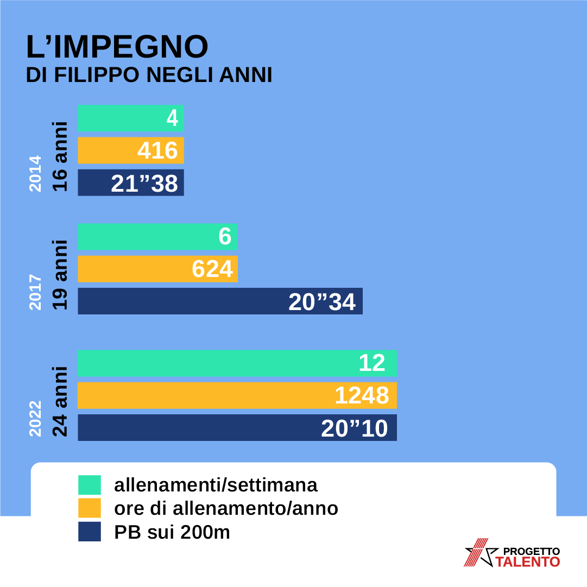
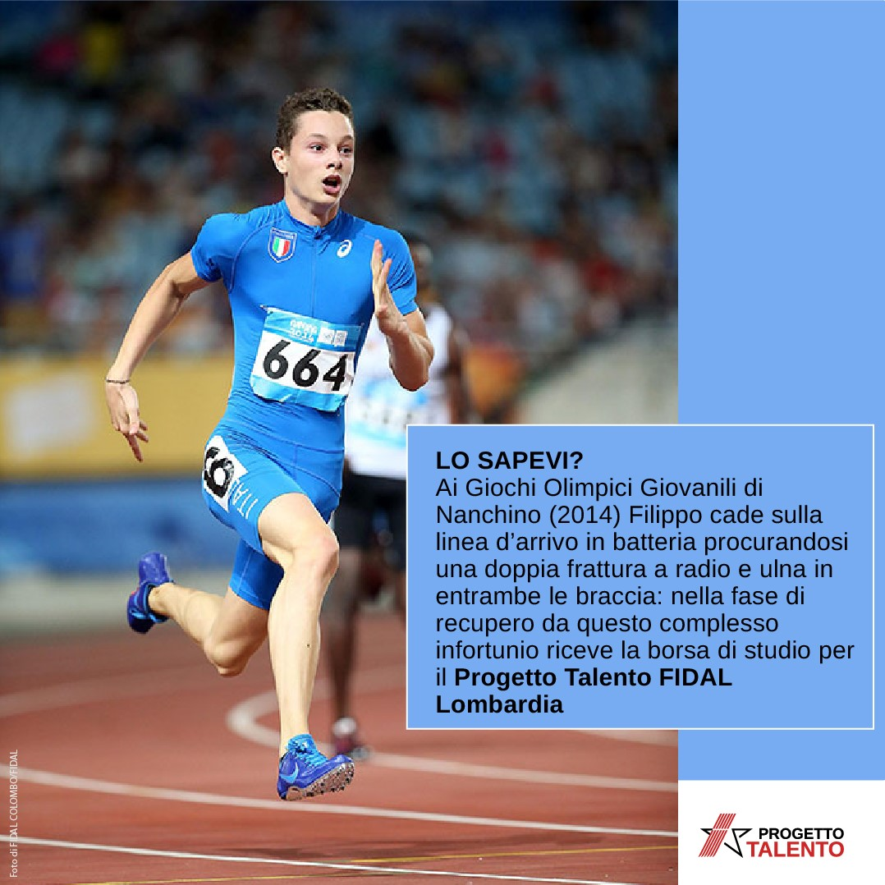

Progetto Talento
Data visualization in sports
The project is a crowdfunding campaign for FIDAL Lombardia, the regional athletics Federation.
The visual identity created for Progetto Talento was applied to several infographics: the project numbers, the athlete's numbers and the athlete's career. The infographics were posted on the social channels (Instagram and Facebook) of Fidal Lombardia and on the website www.fidal-lombardia.it.
My skills visual identity, data visualization, social media
Software Illustrator
In partnership with FIDAL Lombardia.
July 2022






